⟨ , , ′|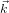′′,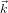′′′⟩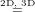 ′|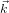′′,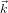′′′⟩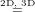 | 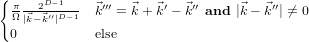 | (2a) |
| ⟨k,k′|k′′,k′′′⟩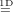 | 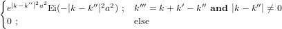 | (2b) |
The Fermi level, kf, is (p. 30 of [? ])
|
| (1) |
The two electron integral is given by (eq. 12 of [? ] and p. 16 of [? ])
where Ω is the direct lattice volume and D is the dimensionality of the system. Ei(x) denotes the exponential integral function. The orbital energies are given by
![(
|| ℏ22⃗km2-- (L2π-)D ∫ ⟨⃗k,⃗k′|⃗k′,⃗k⟩d⃗k′ continuous (eq. 23 of [? ])
|{ |⃗k′|<⃗kf
ϵ⃗k,σ = | 2⃗2 |⃗k|<∑kf
||( ℏ2km--- n ⃗kσ ⟨⃗k,⃗k′|⃗k′,⃗k⟩ discrete (p. 80 of [? ])
⃗k](heg_equations9x.png) | (3) |
Where n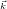σ is the occupation number of the state with momentum 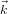 and spin σ. Here we have used the relationship to relate the discrete and continuous quantities, (p. 15 of [? ]). Note the factor of 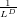 is not in the discrete equation; I have moved that to the definition of the two electron integral for consistency with other resources. Note also that LD = Ω.
|
| (4) |
The analytic form of the exchange energy is known in the continuous case. Let y = 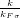. Equations 5 through 7 are from p. 81-82 of [? ]. In 2 or 3 dimensions the exchange energy is,
|
| (5) |
where in 3D, the function f3D is given by
|
| (6) |
and in 2D, it is
|
| (7) |
The functions K(y) and E(y) are complete elliptic integrals of the first and second kind, respectively. These are implemented in SciPy as scipy.special.ellipk and scipy.special.ellipe. After a significant struggle, I have found that the author of the textbook[? ] and scipy/wolfram use a different definition of the complete elliptic integral. I was able to reproduce the graphs on pages 82 and 83 of [? ] properly with K(x) → K(x2) and E(x) → E(x2).
The HF stability conditions (to my knowledge) were presented by Thouless [? ] (1st Ed. 1960). More general conditions were presented by Adams[? ]. The stability condition is that the eigenvalues (λ) given by (p. 41 of [? ])
|
| (8) |
|
| (9) |
are nonnegative. This is equivalent to the RPA oscillation frequencies being all real (p. 115 of [? ]). The RPA is a linearized approximation to Time-Dependent Hartree-Fock theory. These can be written[? ][? ] in the following form:
|
| (10) |
Where the 1,3 denote singlet and triplet states, respectively. A, B have dimension Nocc × Nvir and are defined as follows:
| 1A′ i→a,j→b | = (ϵa - ϵi)δijδab + 2⟨aj|ib⟩-⟨aj|bi⟩ | (11a) |
| 3A′ i→a,j→b | = (ϵa - ϵi)δijδab -⟨aj|bi⟩ | (11b) |
| 1B′ i→a,j→b | = 2⟨ab|ij⟩-⟨ab|ji⟩ | (11c) |
| 3B′ i→a,j→b | = -⟨ab|ji⟩ | (11d) |
The matrix given in Equation 10 represents the case of complex RHF stability in the space of complex RHF space (1H - internal instability) and in the space of complex UHF space (3H - triplet instability). Seeger and Pople [? ] give both more general formulae, and simplifications in special cases. Figure 1 is a reproduction of the stability conditions they developed, and more details can be found in the paper.
Oftentimes we’re interested only in the lowest or highest few eigenvalues of a large, symmetric matrix. Matrix eigenvalue problem operation counts scale as ~O(N3) for an N ×N matrix, while the memory requirement scales quadratically. Iterative subspace methods based off the Rayleigh-Ritz method are popular ways of dealing with this issue. The most famous are the Lanczos (hermitian) and Arnoldi (non-hermitian) algorithms, which build as their subspace a Krylov space. A more involved algorithm was proposed by Davidson[? ] and involves building a subspace with correction vectors to be described momentarily. But first, a few definitions are introduced to define the notation to be used.
We are interested in the lowest (or highest) k (0 < k ≤ N) eigenvalue(s) of the N × N hermitian matrix, A,
|
| (12) |
We begin by guessing M (M ≥ k) vectors, v which approximately span the space of the actual eigenvectors. Let V be the N × M matrix whose columns are the approximate eigenvectors,
|
| (13) |
where care must be taken to ensure columns of V form an orthogonal set. We then transform our matrix into the subspace as follows,
|
| (14) |
where the ~ will be used to denote entities in the subspace. Ã is an M ×M matrix where M ≪ N, and therefore we can use standard diagonalization routines to calculate the eigenvalues and eigenvectors in the subspace,
|
| (15) |
The subspace eigenpair (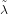i,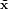i) is then used to create the Ritz pair, (λiR,xiR). The ritz pair is the approximation to the exact eigenpair of the matrix, and is determined by
At any time, the quality of the approximation can be determined by calculating the norm of the residue,
|
| (17) |
when ||ri|| is smaller than a given tolerance for the desired k eigenpairs, the algorithm is finished and the current Ritz pairs are taken to be the eigenpairs. If this condition is not met, the subspace needs to be expanded. This is done by computing correction vectors, δi,
|
| (18) |
for i = 0...l where l is the number of desired ritz pairs with ||ri|| greater than the given tolerance. Corrections are only calculated for these Ritz pairs. The coefficient, ci is a preconditioner. The original choice of ci introduced by Davidson[? ] was diagonal preconditioning,
|
| (19) |
where D is the N ×N diagonal matrix consisting of the diagonal elements of A, and I is the identity matrix of the same size. It may help convergence to use a modified version of this approach,
|
| (20) |
where ρi is the rayleigh quotient, defined by
|
| (21) |
The rayleigh quotient from a physicist’s perspective is ρi = ⟨xiR|A|xiR⟩, which looks like the expectation value of A in the
state xiR. As xiR approaches the actual eigenstate of the system, the rayleigh quotient approaches the eigenvalue.
The correction vector is then added to V and the process is repeated. The correction vector must be normalized and
orthogonalized to the columns of V. The subspace size is therefore increased by l.